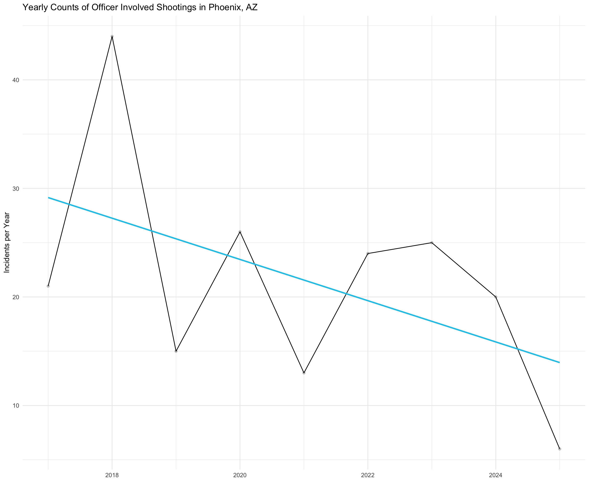
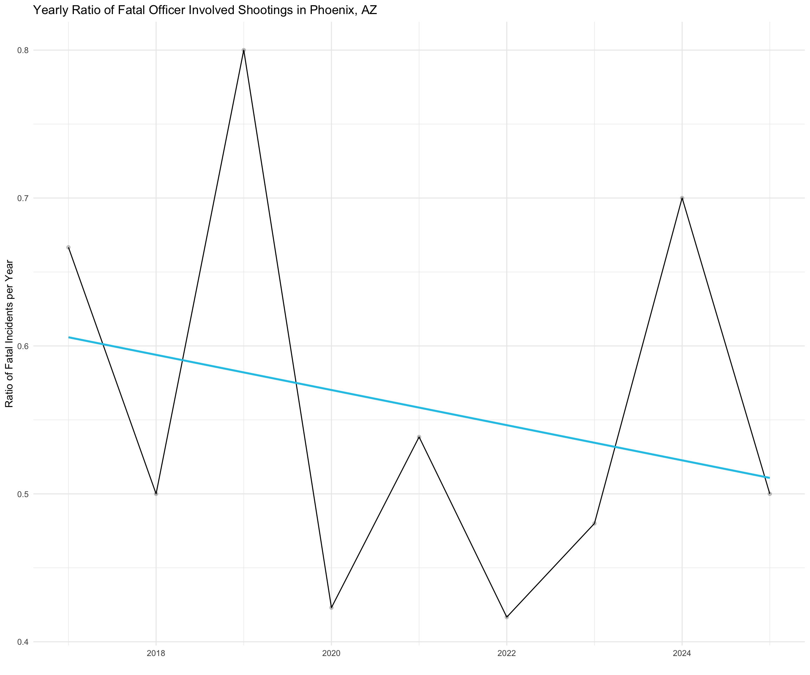

Are officer involved shootings increasing in Phoenix? (and other questions…)
09 April, 2025
The behavior of police officers has been a major event in 2020. So, we might wonder whether officer involved shootings have become more common (or rare?) in Phoenix over the last few years. We can try and answer this question by examining the officer involved shootings data from the City of Phoenix open data portal. Let’s get to it!
About the Data
The officer involved shootings page lists several data sets describing the incidents. Here, we will work with the individual summary file. This file is used because it is just the count for individual incidents and it has a flag for whether the incident involved a fatality.
The dataset is a CSV file containing all officer involved shooting incidents by Phoenix Police Department officers from January 1, 2017 to a week prior to the current date. Accidental discharges, discharges at animals, and discharges at objects where there was not an active threat by a subject are not included in this data set.
As of April, 2025, there were 193 officer involved incidents with complete data from January 2017 to within a week of the current date.
The dataset contains information about:
When the incident occurred (e.g.
OIS_DATE,OIS_YEAR)The suspect, denoted by the
SP_prefix (e.g.SP_AGE_GROUP,SP_GENDER)And the outcome, such as the injury level (i.e.
SP_INJURY_LEVEL) and whether there was a fatality (i.e.FATALITY_FLG)
Getting the data (code)
# set the url where the data are located.
url <- "https://www.phoenixopendata.com/dataset/754b1156-a48f-4d1b-b17a-53bd96d5b2be/resource/f4df6466-e4d5-4452-ad1b-5fb7f3fa19df/download/oisindividual.csv"
# pull in the csv file.
shooting.data <- read.csv( url, as.is = TRUE, header = TRUE )
# take a look at the data.
head( shooting.data ) Preprocessing the data (code)
Now that the data are in the workspace, let’s clean up the dates
using the strptime() and format() functions
here.
# The date and time variable is a character string.
head( shooting.data$OIS_DATE )## [1] "08/17/2017" "03/15/2017" "04/01/2018" "06/29/2018" "10/20/2020"
## [6] "03/27/2018"is.character( shooting.data$OIS_DATE )## [1] TRUE# Since the month variable is in an unusual format, we need to convert the date string to a date format code. Then pull off the month.
date.vec <- strptime( shooting.data$OIS_DATE, format="%m/%d/%y" )
# Now, let's use the format() function to create the month.
shooting.data$month <- format( date.vec, format="%B" )Monthly Incidents
As a first step, let’s take a look at the monthly occurrence of officer involved shootings. The plot shows the monthly count of officer involved shootings from January, 2017 to April, 2025.

The plot shows several interesting patterns:
First, there are multiple months throughout the years in which there are no shootings.
Second, March, May, and August of 2018, as well as October of 2020 both stick out as unusual in that there were 6 in each of these months.
Third, 2020 is not as an unusual as I had expected. Beginning in August, there is a consistent increase until December. There were 26 officer involved shootings in 2020. For 2017, 2018, and 2019, there were 21, 15, and 15 officer involved shootings, respectively. So, for 2020 there were more, but not substantially more officer involved shootings.
(code)
# Create an object that is monthly counts and sorted by year.
shootings.by.month <-
shooting.data %>%
select( OIS_YEAR, month ) %>%
group_by( OIS_YEAR, month ) %>%
summarize( counts = n() ) %>%
spread( OIS_YEAR, counts ) %>%
arrange( match( month, month.name ) ) %>%
select( !month )
# Replace missing values with zero.
shootings.by.month[ is.na( shootings.by.month ) == TRUE ] <- 0
# Use the ts() function to create a time series object.
monthly.shootings.by.year <- ts(
matrix( as.matrix( shootings.by.month ), ncol = 1 ),
start=c( 2017, 1 ),
end=c( as.numeric( tail( names( shootings.by.month ), n=1 ) ), 12 ),
frequency=12
)
# Finally, let's take a look using ggseasonplot().
library( ggplot2 )
library( forecast )
# Now, plot it.
monthly.shootings.by.year %>%
ggseasonplot(
year.labels=FALSE,
main = "Plot of Monthly Officer Involved Shootings by Years for Phoenix" ) +
scale_y_continuous(label = comma) +
theme_gray() Yearly Incidents
As a second step, let’s take a look at the yearly occurrence of officer involved shootings. This will take the data shown above by month and condense it by year. We will also plot the linear trend line. The plot shows the yearly count of officer involved shootings from January, 2017 to April, 2025.

The plot shows a general tend toward a decrease in officer involved shootings. But note that there is a lot of yearly variation.
(code)
# Create an object that is yearly counts and sorted by year.
shootings.by.year <-
shooting.data %>%
select( OIS_YEAR ) %>%
group_by( OIS_YEAR ) %>%
summarize( counts = n() )
# We will use a simple line/point plot.
library( ggplot2 )
# Now, plot it.
shootings.by.year %>%
ggplot( aes( OIS_YEAR, counts ) ) +
geom_line( color = "black" ) +
geom_point( alpha = 1/5, color = "black" ) +
labs( x = "", y = "Incidents per Year" ) +
ggtitle( "Yearly Counts of Officer Involved Shootings in Phoenix, AZ" ) +
geom_smooth( method=lm, se=FALSE, col="lightblue", size = 1 ) +
scale_y_continuous(label = comma) +
theme_minimal() Suspect Characteristics
Additionally, we can examine the characteristics of the individuals who are shot. In the data, there are several variables for “suspect characteristics”.
There are a few interesting features of the data:
- Of the 193 shootings, 105 were fatal, a proportion of 0.54.
The plot below shows the frequency distribution (i.e. counts) of shootings by year broken-out by whether the shooting was fatal or non-fatal.

An important question is whether shootings have become more (or less) fatal over time. The plot below shows the fatality ratio, represented by the percentage of officer involved shootings in which there is a fatality.

Over time, there has been a decline in the number of officer involved shootings in which there is a fatality.
There are more interesting features of the data:
- Whites account for a minority of cases, with a proportion of 0.3.
The plot below shows the frequency distribution (i.e. counts) of shootings by age, outcome (where red is a fatality), and faceted by whether the suspect is White or Non-White.

(code)
# Create a plot for fatal vs. non-fatal shootings by year.
ggplot(
shooting.data %>%
select( SIMPLE_SUBJ_RE_GRP, SP_AGE_GROUP, FATALITY_FLG ) %>%
mutate( sp_wnw = ifelse( SIMPLE_SUBJ_RE_GRP != "White", "Non-White", "White" ) ) %>%
mutate( SP_AGE_GROUP = replace( SP_AGE_GROUP, SP_AGE_GROUP == 120, 12 ) ) %>%
group_by( sp_wnw, SP_AGE_GROUP, FATALITY_FLG ) %>%
summarize( counts = n() ) ) +
geom_col( aes( SP_AGE_GROUP, counts, fill = FATALITY_FLG ) ) +
facet_wrap( ~sp_wnw ) +
labs( x = "Suspect Age" ) +
labs( fill = "Outcome of Shooting" ) +
scale_fill_manual(values = c("#ca0222", "#02677b")) +
labs( title = "Plot of Suspect Age, Suspect Race, and Outcome for Officer Involved Shootings in Phoenix" ) +
theme_gray()
# Create a plot for the ratio of fatal shootings to all shootings.
fatal.shootings.by.year <-
shooting.data %>%
select( OIS_YEAR, FATALITY_FLG ) %>%
filter( FATALITY_FLG == "Fatal" ) %>%
group_by( OIS_YEAR ) %>%
summarize( f.counts = n() ) %>%
group_by( OIS_YEAR )
shootings.by.year <-
shooting.data %>%
select( OIS_YEAR ) %>%
group_by( OIS_YEAR ) %>%
summarize( counts = n() )
fatal.shootings.by.year$ratio <- fatal.shootings.by.year$f.counts / shootings.by.year$counts
fatal.shootings.by.year %>%
ggplot( aes( OIS_YEAR, ratio ) ) +
geom_line( color = "black" ) +
geom_point( alpha = 1/5, color = "black" ) +
labs( x = "", y = "Incidents per Year" ) +
ggtitle( "Yearly Counts of Officer Involved Shootings in Phoenix, AZ" ) +
geom_smooth( method=lm, se=FALSE, col="lightblue", size = 1 ) +
scale_y_continuous(label = comma) +
theme_minimal()
# Create a plot with race, age, and the outcome.
ggplot(
shooting.data %>%
select( SIMPLE_SUBJ_RE_GRP, SP_AGE_GROUP, FATALITY_FLG ) %>%
mutate( sp_wnw = ifelse( SIMPLE_SUBJ_RE_GRP != "White", "Non-White", "White" ) ) %>%
mutate( SP_AGE_GROUP = replace( SP_AGE_GROUP, SP_AGE_GROUP == 120, 12 ) ) %>%
group_by( sp_wnw, SP_AGE_GROUP, FATALITY_FLG ) %>%
summarize( counts = n() ) ) +
geom_col( aes( SP_AGE_GROUP, counts, fill = FATALITY_FLG ) ) +
facet_wrap( ~sp_wnw ) +
labs( x = "Suspect Age" ) +
labs( fill = "Outcome of Shooting" ) +
scale_fill_manual(values = c("#ca0222", "#02677b")) +
labs( title = "Plot of Suspect Age, Suspect Race, and Outcome for Officer Involved Shootings in Phoenix" ) +
theme_gray() Back to Open Criminology Phoenix page
Please report any needed corrections to the Issues page. Thanks!